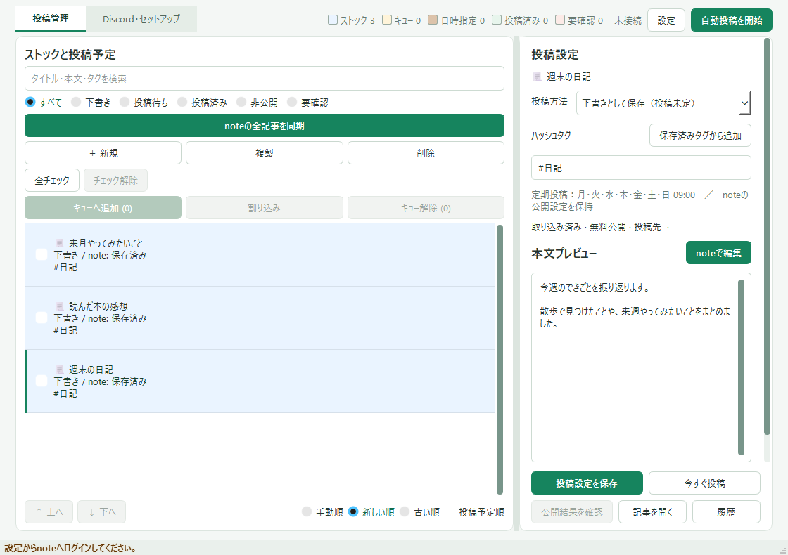
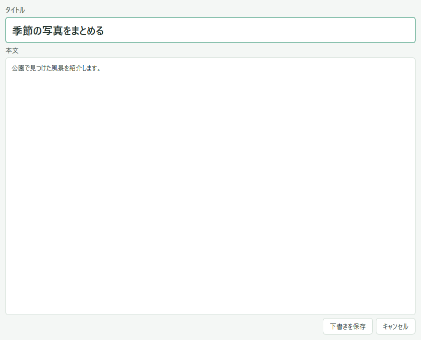

詳細説明書の目次
記事一覧・同期・新規作成
検索と絞り込み、本文取得、複製、ハッシュタグ、下書き保存
一覧の見方・検索・表示の絞り込み


検索欄では題名・本文・タグを探せます。未取得の本文はまだ検索対象として使えない場合があるので、記事名でも探してください。「すべて」「下書き」「投稿待ち」「投稿済み」「非公開」「要確認」で表示を切り替えます。
一覧上部の件数はストック・キュー・日時指定・投稿済み・要確認を区別します。黄色は定期投稿のキュー、茶色は日時を個別に指定した記事です。状態と色の一覧も参照してください。
並び順と画面の調整
「新しい順」「古い順」「手動順」で記事を探します。「投稿待ち」を選んだ場合は「投稿予定順」で予定を確認できます。手動順の上下移動と、定期投稿キューのドラッグによる予定変更は別の操作です。
左右の境界をドラッグすると一覧と投稿設定の幅を変更できます。右側の設定が見切れる場合は、その領域をスクロールしてください。ウィンドウの大きさや一覧の条件などは次回起動用に保存されます。
一覧の同期と本文取得は別の操作
| 操作 | 取り込む内容 | 使う場面 |
|---|---|---|
| noteの全記事を同期 | 記事一覧、note上の状態、更新情報 | noteで追加・変更した記事を一覧へ出す |
| 記事をダブルクリック／Discordで記事を押す | その記事の本文・公開条件 | 内容を読み、投稿条件を確認する |
| 内容・公開条件を読み直す | 指定した記事の最新内容 | note側で本文や価格などを編集した後 |
全記事を同期しても、一覧の全記事の本文を順番に取得する動作ではありません。予約・キュー追加・タグ変更だけでも本文の全件取得は行いません。
本文を取得する・読み直す
- PCでは記事をダブルクリックします。Discordでは一覧の記事タイトルを押します。
- 取得表示が終わるのを待ちます。
- 本文と公開条件を確認します。Discordの長文は添付の
article.txtでも読めます。
取得済みの記事は保存済みの内容を表示します。同じ未取得記事を取得中に何度押しても、同じ取得処理が重ならないよう扱います。最新の編集内容が必要なときは明示的に読み直します。
保存済みの公開条件がない記事は、予約が一覧に入っていても、そのまま公開できるとは限りません。投稿前の公開条件の確認まで行ってください。
自動同期・取得に失敗した場合
一覧は標準で60分ごとに自動同期します。「設定」の「記事一覧の自動同期間隔」で1〜1440分に変更できます。すぐに一覧を更新したいときは手動同期を使います。
全ページを取得できなかった場合は、取得済みの記事を残したまま「全件取得未確認」と表示します。これだけでnoteの記事が削除されたとは判断しません。通信とログインを確認してから再同期してください。同じnote記事は同じ記事として追跡します。
同期開始待ち・同期中・完了の表示
PCの一覧同期ボタンは、受付後に「同期開始待ち…」、実行中に「同期中…」へ変わります。ボタンの下の進捗バーと状態文で進み具合を確認できます。開始待ちは、前の処理が終わってから同期を始める状態です。
完了後は「同期完了：」、失敗後は「同期に失敗しました：」と理由を残します。進捗バーが表示中の操作を連打して、同じ同期を重ねる必要はありません。結果を読んでから再操作してください。
新しい下書きを作る


- PCで「＋ 新規」を押します。
- タイトルと本文を入力し「下書きを保存」を押します。両方が空でないと保存できません。
- noteへの保存結果を確認します。ログイン未完了や失敗時はPC内の原稿として残る場合があります。
- note保存を確認してから、必要に応じて予約・キュー追加へ進みます。
「PCに仮保存」「note保存待ち」「note保存確認済み」は別です。PC内に原稿があるだけで、noteへ保存済みになったり公開されたりするわけではありません。
記事を複製する
PCで元の記事を選び「複製」を押します。複製は別の原稿として作られ、接続確認済みの場合はnoteへの下書き保存が受け付けられます。結果が出るまで待ち、新しい記事を確認してください。
元の記事と複製先は別の記事です。複製先のタイトル、本文、画像、公開条件、タグを確認してから投稿予定を設定します。複製を押しただけで、元の記事の更新や即時公開を行う操作ではありません。